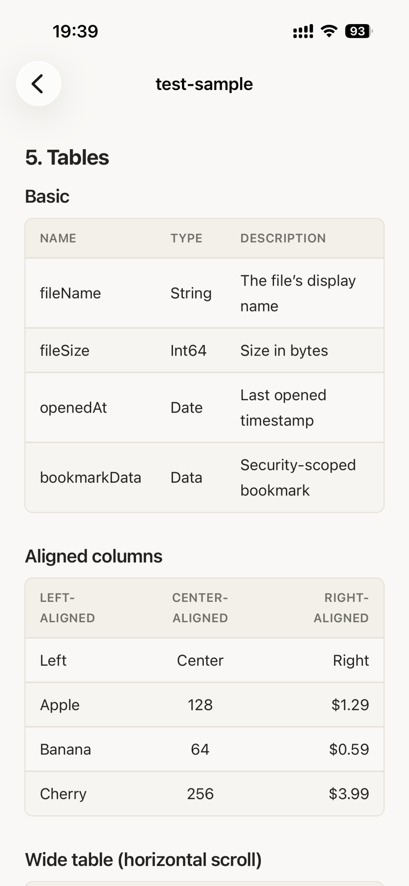

iPhone と iPad 用 Markdown ビューア
MarkdownファイルをiPhoneでオフライン表示。
このページは、オフラインファイルから受け取ったMarkdownファイルをiPhoneやiPadですぐに読みたいユーザー向けです。
すぐわかる答え
Md Previewをインストールし、Filesまたは共有シートからファイルを開くと、iPhone/iPad上でローカルにプレビューできます。
サブスクリプションなし。アプリ内課金なし。広告なし。
ファイルは端末内に残ります。
App Store スクリーンショット
公式 App Store スクリーンショットで、AI、Files、クラウド、メールから受け取ったファイルを iPhone と iPad で開く流れを示します。
App Store でダウンロード
 Code blocks and JSON
Math rendered cleanly
Code blocks and JSON
Math rendered cleanly

Tables stay readable
iPhoneやiPadでMarkdownファイルをオフラインでプレビューするには？
Md Previewをインストールし、Filesまたは共有シートからファイルを開くと、iPhone/iPad上でローカルにプレビューできます。 ChatGPT、Claude、Gemini、Obsidian、Notion、GitHub、メール、iCloud Drive、Google Drive、Dropbox からの Markdown ファイルを Md Preview で表示できます。 サブスクリプションなし。アプリ内課金なし。広告なし。
iPhoneやiPadでMarkdownファイルをオフラインでプレビューするには？
Md Previewをインストールし、Filesまたは共有シートからファイルを開くと、iPhone/iPad上でローカルにプレビューできます。
iPhoneでMarkdownファイルをオフラインでプレビューするには？
Md Previewをインストールし、Filesまたは共有シートからファイルを開くと、iPhone/iPad上でローカルにプレビューできます。
オフラインファイルに対応していますか？
はい。Md Previewはオフラインファイルから受け取るMarkdownファイルの閲覧に向いています。
iOS の足りない部分を補う
AI チャットボット、GitHub、ノートアプリ、ドキュメントツールは Markdown を多く生成しますが、iPhone や iPad では読みづらいことがあります。
Markdown プレビュー
GFM テーブル、タスクリスト、脚注、リンク、取り消し線に対応。
技術文書に強い
コードハイライト、LaTeX 数式、Mermaid 図に対応。
プライバシー重視
アップロード、解析、トラッキングはありません。
AI 生成の Markdown に最適
ChatGPT、Claude、Gemini、Obsidian、Notion、GitHub、メール、iCloud Drive、Google Drive、Dropbox からの Markdown ファイルを Md Preview で表示できます。
ChatGPT
Claude
Gemini
iPhone
iPad
使い方
ファイルを受け取る
.md、.markdown、.mdx、.rmd、.qmd ファイルを保存します。
Md Preview で開く
共有シート、Files アプリ、ファイル関連付けを使います。
すぐに読む
Markdown が端末上で読みやすくレンダリングされます。
このMarkdownファイルがiOSで開きにくい理由
個人メモ、AI下書き、学習資料、仕事の文書を読むだけのために、オンラインサービスへアップロードしたくない場面があります。
最短の解決方法
Md PreviewをApp Storeから入れ、Files、共有シート、または元のアプリからファイルを開きます。端末上でローカルにプレビューでき、サブスクリプション、アプリ内課金、広告はありません。
オフラインファイルから開く手順
ローカルのMarkdownファイルをMd Previewで開くと、レンダリングされた内容を端末上で読めます。
開く前に確認すること
編集や同期より、手元のファイルをすぐ読むことが目的ならオフラインビューアが向いています。
ローカルプレビューが向いている理由
Md Previewはファイルを読むことに集中したビューアです。アップロード、アカウント作成、広告、重い編集機能を挟まず、必要なファイルをすぐ確認できます。
HTMLファイルも扱う場合
AIやドキュメント作業ではMarkdownとHTMLの両方を受け取ることがあります。Html PreviewはHTML用の関連ビューアです。
よくある質問
iPhoneでMarkdownファイルをオフラインでプレビューするには？
Md Previewをインストールし、Filesまたは共有シートからファイルを開くと、iPhone/iPad上でローカルにプレビューできます。
オフラインファイルに対応していますか？
はい。Md Previewはオフラインファイルから受け取るMarkdownファイルの閲覧に向いています。
サブスクリプションや広告はありますか？
ありません。Md Previewにはサブスクリプション、アプリ内課金、広告はありません。
ファイルはサーバーにアップロードされますか？
いいえ。MarkdownのプレビューはiPhoneまたはiPad上で行われます。
記事
ChatGPT、Claude、Geminiが作成したMarkdownファイルをiPhoneやiPadで開く方法。.md、コード、数式、Mermaidをローカルで表示できます。
iPhone向けMarkdownビューアを選ぶポイント。GFM、コード、数式、Mermaid、オフライン表示、プライバシー、広告なしを重視できます。
GitHub、Obsidian、Notionやドキュメント作業から来たMarkdownファイルをiPhoneやiPadでローカル表示する方法。
Files、AirDrop、iCloud Drive、ダウンロードに保存した.mdやMarkdownファイルをiPhoneで開く方法。Md Previewでローカル表示できます。
GitHubのREADME.mdをiPhoneやiPadで読む方法。見出し、コードブロック、リンク、表をMarkdownビューアで表示できます。
ObsidianのMarkdownノートをiPhoneやiPadで読む方法。.md、リンク、見出し、リスト、コードブロックをローカルに表示できます。
コードブロック、LaTeX数式、Mermaid図、GFMテーブルを含む技術MarkdownをiPadでローカル表示する方法。
iPhoneとiPadでMarkdownファイルをオフライン表示。.mdをアップロードなし、サブスクなし、アプリ内課金なし、広告なしで開けます。
iPhone と iPad でファイルを回り道なく開けます。